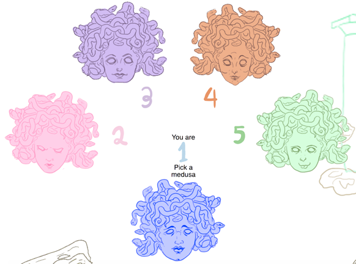
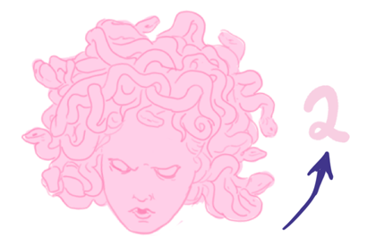
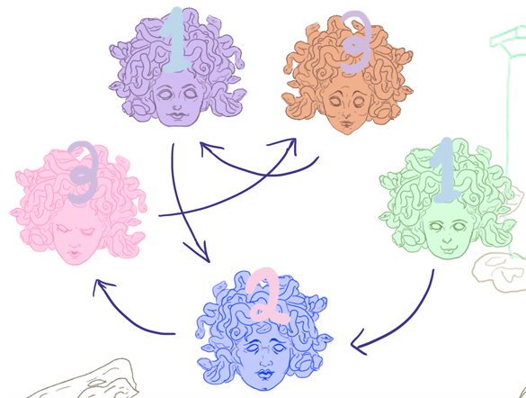
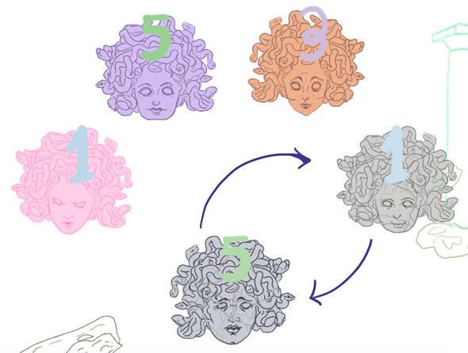

You are the blue Medusa amongst your clan. Each of the other's Medusa's numbers can always be seen by hover your mouse over each one.
Its number will correspond to its color!
The Medusas like to play a very dangerous game, where they look at each other at the same moment. If two Medusas pick each other to look at, then they turn to stone.
You can see which Medusa picked who by seeing the corresponding number of their pick on their forehead.
Here you see that number 1 picked 5, and number 5 picked 1. Both of the Medusas stared into each other's cursed gaze and turn to stone.
Be the last Medusa standing not turned to stone.
YOU WIN
YOU TURNED TO STONE